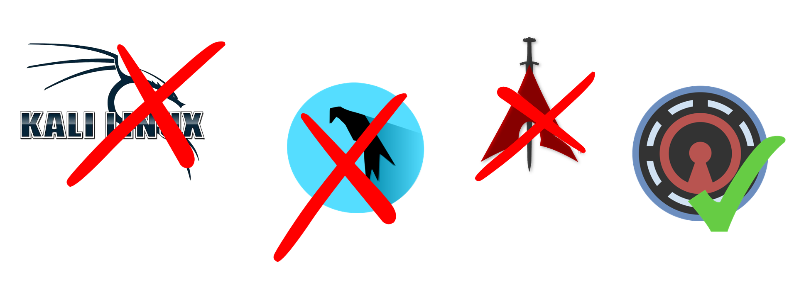
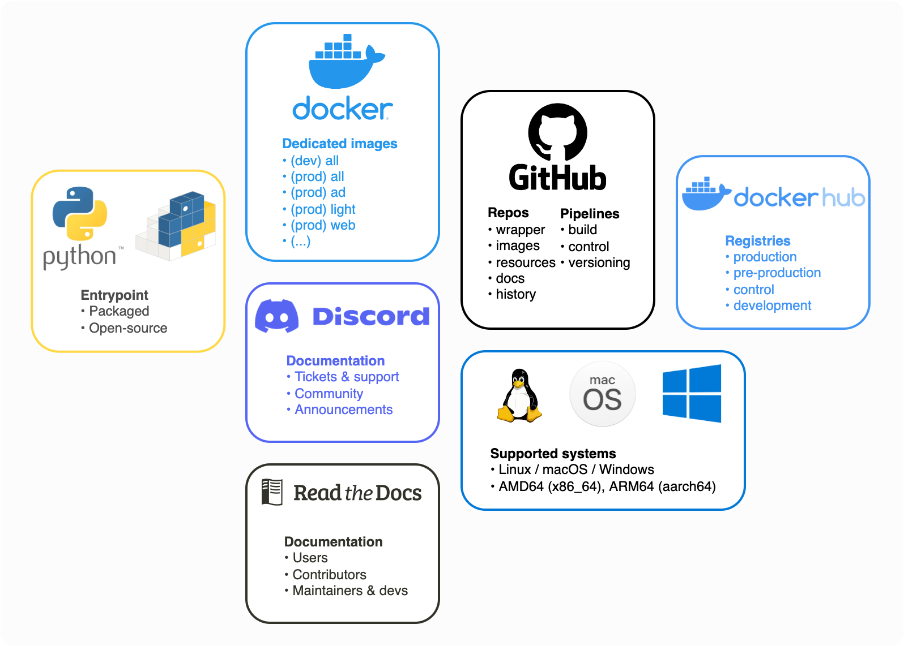

Exegol: professional hacking setup


Exegol is a community-driven hacking environment, powerful and yet simple enough to be used by anyone in day to day engagements. Exegol is the best solution to deploy powerful hacking environments securely, easily, professionally. No more unstable, not-so-security-focused systems lacking major offensive tools. Kali Linux (and similar alternatives) are great toolboxes for learners, students and junior pentesters. But professionals have different needs, and their context require a whole new design.
Exegol fits pentesters, CTF players, bug bounty hunters, researchers, beginners and advanced users, defenders, from stylish macOS users and corporate Windows pros to UNIX-like power users.
Warning
This documentation is a work in progress. We are actively writing it, but if there are things you’d like to be documented in priority, feel free to request in on the GitHub Repo or in the Discord server.
The Exegol project
Exegol is many things in one. Try it, and you’ll stop using your old, unstable and risky environment, no more monolithic system that gets messier, buggier and more at risk with time.
Python wrapper: makes everyone’s life easier. This entrypoint to the whole Exegol project handles all docker and git operations so you don’t have to. Now’s the time to have a clean environment with one Docker container per engagement without the effort. Exegol handles multiple images and multiple containers. GUI apps, Wi-Fi, USB accessories, volume mounting and many more features are supported and easier to use than ever.
Docker images: a set of pre-built docker images and dockerfiles that include a neat choice of tools, zsh plugins for power users, pre-filled history ready to use with environment variables, awesome resources, custom configs and many more. Images can either be built locally or pulled from the official Dockerhub registry.
Offline resources: Tired of always having to search github for your favorite privesc enumeration script? Exegol includes a set of resources, shared with all exegol containers and your host, including LinPEAS, WinPEAS, LinEnum, PrivescCheck, SysinternalsSuite, mimikatz, Rubeus, PowerSploit and many more.
Getting started
Wanna try Exegol and join our great community? You need to install requirements first, then proceed to the OS-specific instructions: Linux | macOS | Windows
Community
Have a bug report or feature request? Either open an issue on the Exegol repo or open a ticket on the Exegol discord (preferred, easier, more flexible).
Wanna chat? Need help? Join us on the Exegol discord!